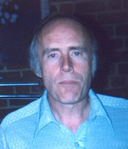

Bruce Maccabee
Navy optical physicist, 1942 to 2024

An optical physicist for the Navy who joined NICAP in the late 1960s, chaired the Fund for UFO Research, and was MUFON's Maryland director. 1
He analyzed cases from Kenneth Arnold's sighting and the McMinnville photos to the Gulf Breeze photos and the Phoenix Lights, and argued that Condon misrepresented his own study's results; he judged a 1997 Mexico City video a hoax. 1
Open in the interactive Watcher
Related
Sources
- Bruce Maccabee Wikipedia